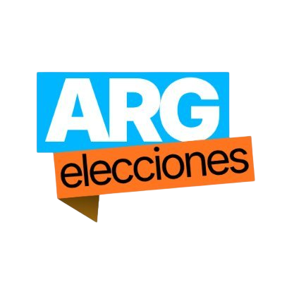

Herramientas para el análisis electoral y legislativo de Argentina
Monitoreo dinámico de votaciones para ambas cámaras del Congreso y "busca quórum".
Cronograma y seguimiento del calendario electoral nacional y provincial.
Distribución de bancas mediante cocientes proporcionales.
Cálculo de reparto por residuo mayor (Provincia de Bs. As.).
Últimas noticias y encuestas publicadas sobre reforma y proceso electoral en tiempo real.
Visualización y diseño de cámaras legislativas.